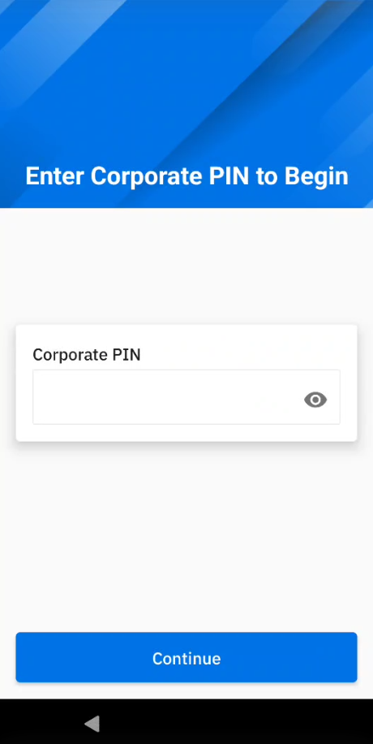

Overview
After the administrator has configured Identity Guardian and set up user profiles for either shared or personally assigned devices, users must complete a one-time enrollment process on the device. For those opting to use facial biometrics, Identity Guardian displays customizeable Terms and Conditions. Users must accept the Terms and Conditions to proceed with using facial biometrics. After enrollment, users can sign in and sign out of the device as needed.
User Enrollment
The user enrollment procedure varies based on the 2 device access methods:
- Shared Device
- Personally Assigned Device
Shared Device
Before users can sign in or authenticate on a shared device, they must first register with Identity Guardian. Administrators create and deploy the enrollment profile, then launch Identity Guardian on the shared device to initiate the enrollment process. Alternatively, a designated device may be used for user enrollment, with administrators optionally guiding users through this initial setup.
The options available to users during the on-device enrollment process may vary based on the Enrollment Configurations set by the administrator. For more details on how to apply the settings, see the EMM Setup section.
Administrators also need to create and deploy an authentication profile to enable users to authenticate on their shared devices.
To enroll users on shared devices:
- In Identity Guardian, tap Start.

- (Optional) This is a 6 digit PIN set by the administrator. Tap Continue. 
- Setup ID and passcode:
- Enter ID or email
- (Optional) Select the appropriate user role (options vary based on your adminstrator setup)
- (Optional) Enter the expiration date for the barcode. This applies for temporary users.
- Create a passcode based on the requirements set by the administrator.
- Re-enter the passcode

- (Optional) Capture facial biometrics. If opting out, tap Skip and skip to step 7 below. Otherwise, tap Add and continue with the subsequent steps.
- Read the Terms & Conditions. Tap Confirm to accept.

- Position your face within the device screen for the photo capture. Capture 1 to 3 facial photos that may vary based on the individual's look, for example, with eyeglasses, hat, etc. Confirm the photo capture(s). Tap Add to capture additional photos. Tap Next when done.

- The barcode is generated. Tap Next.

- Tap Save to save the profile.

- Tap Continue. The enrollment profile creation is complete.

Upon completion of user enrollment on the shared device, the administrator proceeds to deploy the authentication profile, which enbles users to sign into the device.
Personally Assigned Device
Before users can sign in or authenticate on a personally assigned device, they must first register with Identity Guardian. Administrators create and deploy the personally assigned profile, then launch Identity Guardian on the device to initiate the enrollment process. The options available to users during the on-device enrollment process may vary based on the Enrollment Configurations set by the administrator.For more details on how to apply the settings, see the EMM Setup section.
After the enrollment process, the user is immediately presented with the authentication screen.
To enroll users on personally assigned devices:
- Open Identity Guardian.
- Tap Start.
- Enter corporate PIN. This is a 6 digit PIN set by the administrator. Tap Continue.
- Setup ID and passcode, then tap Next.
- Enter ID or email
- (Optional) Select the appropriate user role (options vary based on setup by your adminstrator)
- Create a passcode, which can contain up to 6 alphanumeric characters.
- Re-enter the passcode.
- (Optional) Capture facial biometrics. If opting out, tap Skip and skip to step 7 below. Otherwise, tap Add and continue with the subsequent steps.
- Read the Terms & Conditions. Tap Confirm to accept.
- To add a facial photo, tap Add. Position your face within the device screen for the photo capture. Capture 1 to 3 facial photos that may vary based on the individual's look, for example, with eyeglasses, hat, etc. Confirm the photo capture(s). Tap Add to capture additional photos. Tap Next when done.
- Tap Save to save the profile.

- Tap Continue. The profile creation is complete.

Edit Profile
To edit a profile on a personally assigned device:
- Open Zebra Biometric app.
- Enter your passcode.

- Select the item to edit:
- ID & Passcode
- Face Recognition

- If ID & Passcode is selected, make the appropriate edits and tap Save:
- Role - select the desired role
- Passcode - enter the current passcode and the new passcode

- If Face Recognition is selected, delete the existing facial photo and replace it by capturing a new photo.

Delete Profile
To delete a user profile on a personally assigned device:
- Open Zebra Biometric app.
- Enter your passcode.
- Tap on the menu icon at the top right and select Delete Profile.

After the user profile is deleted, the enrollment screen appears for a user to re-enroll to the device and authenticate the user.
Device Sign In
After a user is enrolled, the authentication screen is displayed on the device. This screen also appears based on the lock-screen event options defined by the administrator in the managed configurations. These options can be triggered from various events such as when a user signs out, locks or reboots the device.
To sign in a device, tap Unlock.
 The device prompts the user to authenticate via the primary authentication method selected by the administrator, such as facial biometric or passcode entry. If the primary authentication method fails, the secondary authentication method is presented for the user to execute. Unlicensed devices present a passcode to be entered rather than requesting for a facial biometric.
The device prompts the user to authenticate via the primary authentication method selected by the administrator, such as facial biometric or passcode entry. If the primary authentication method fails, the secondary authentication method is presented for the user to execute. Unlicensed devices present a passcode to be entered rather than requesting for a facial biometric.
If Microsoft Authenticator app is in use, perform the following after the user unlocks the screen:
- The Microsoft Authenticator app is launched prompting for user authentication. Enter the login credentials:
 |
 |
- After authentication is successful, the user gains access to the device.
- When a user launches any app that utilizes Microsoft Authenticator app as broker, the app automatically signs in without prompting for user name or password.
User Authentication Scenarios
This video demonstrates various scenarios of user device authentication. In this example, one group of authentication settings is applied to a shared device with the following configurations:
- Comparison source: Barcode
- Primary authentication: SSO
- Secondary authentication: Passcode
- Fallback authentication: Admin bypass passcode
Device Sign Out
Sign Out only applies to shared devices. To sign out a device, perform one of the following:
- Open Identity Guardian app (Zebra Biometric) and tap Sign out.
- Swipe down to open the notification drawer. From the Identity Guardian notification, tap Sign Out.

- Lock the device.
- Restart the device (if configured by the administrator).
After a device is signed out, the lock screen is visible:
ZDNA Cloud
With the Zebra DNA Cloud platform, Identity Guardian provides administrators with visibility into user activities. This includes the ability to track who has signed in and out of devices, the security measures in place, usage times, and more. Additionally, administrators have the ability to expire users, reset PIN passcodes, and override screen locks.

For more information, see the ZDNA Cloud documentation.